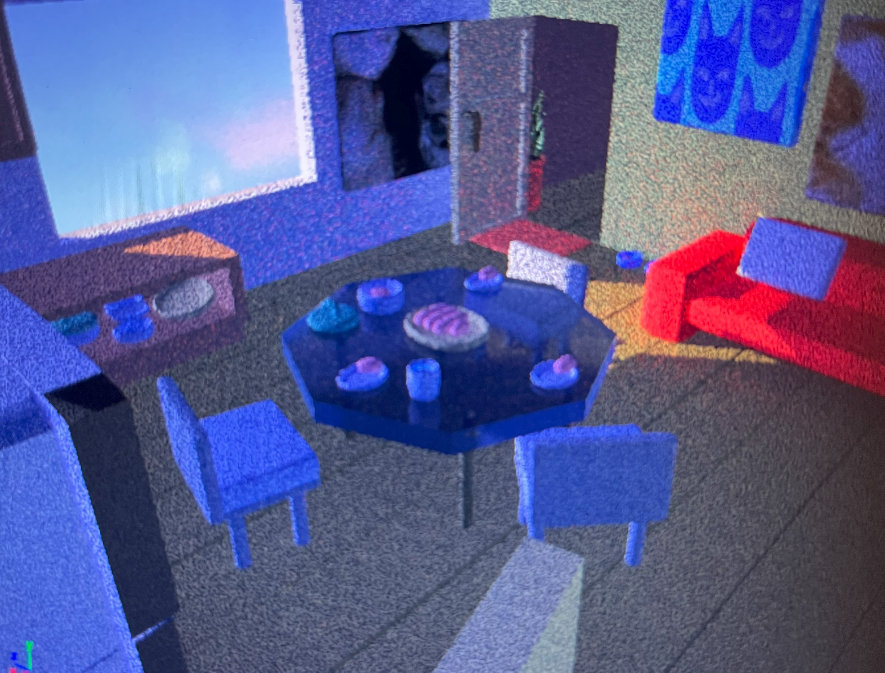
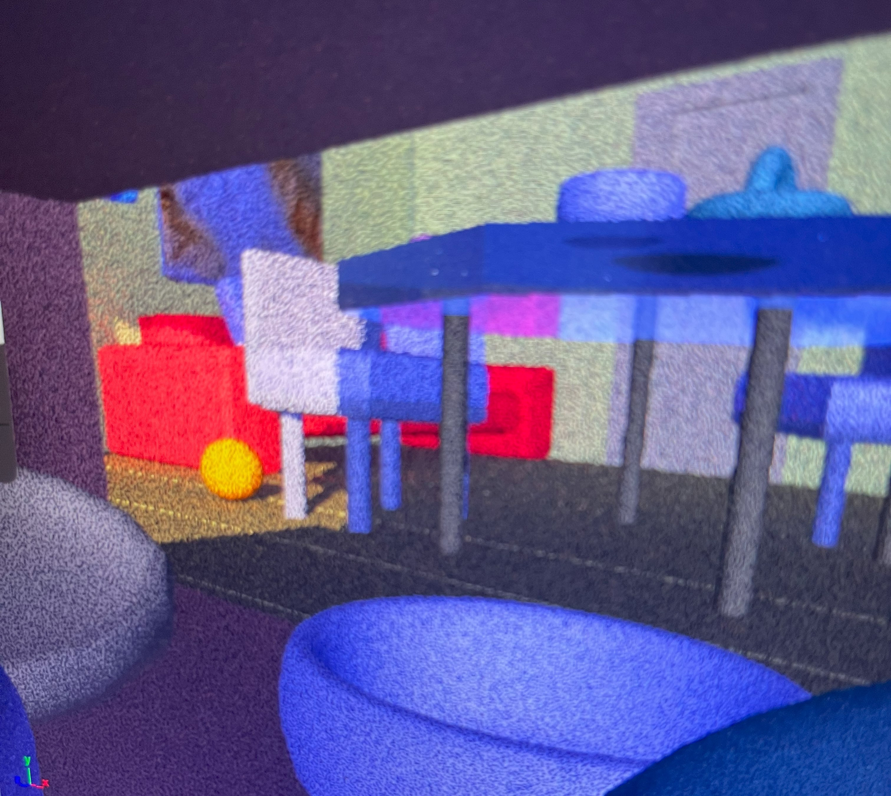
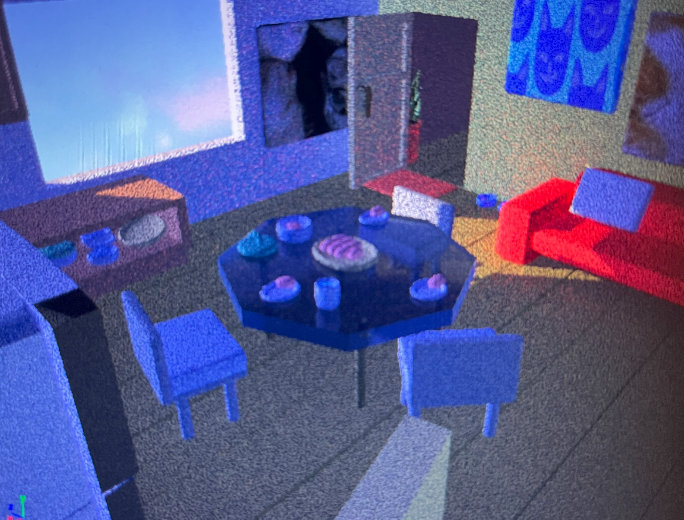
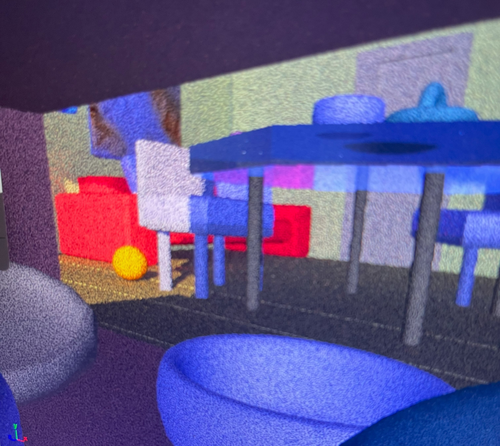
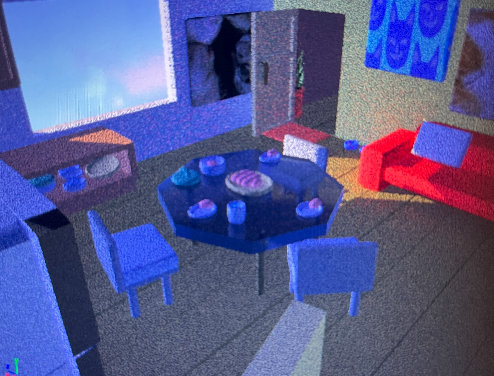
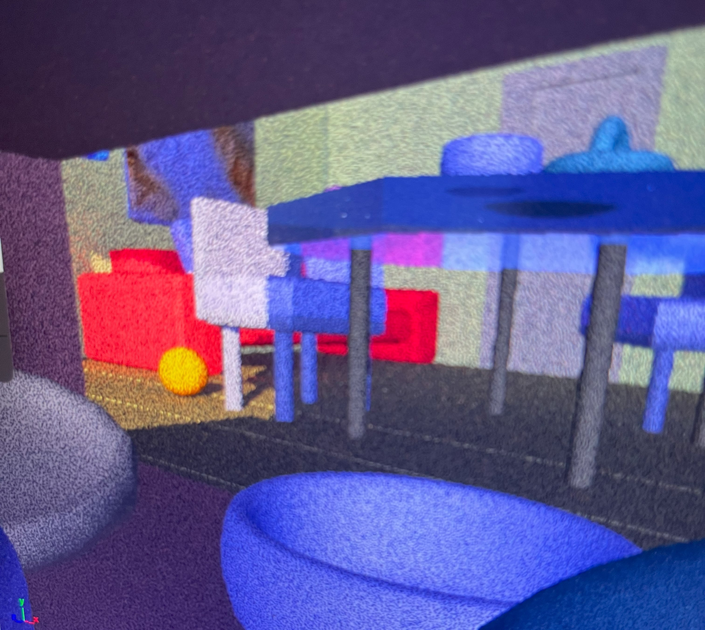

Neal
Aracil



Hey, I’m Neal (any/all pronouns) majoring in Animation along with minoring in Computational Practices + Writing & Literature. Even though my main passion is drawing, its been really fascinating to explore the potiental programming has for creating art.I’ve been really enjoying learning about animating and modeling in Autodesk Maya so it’s nice to finally be able to build a small site to show off some of the work I’ve done in my classes. Moving forward I’d like to learn more about the scripting aspect of Maya by using MEL, Python, and C++ to create some plugins to speed up my workflow as well as being able to help others.